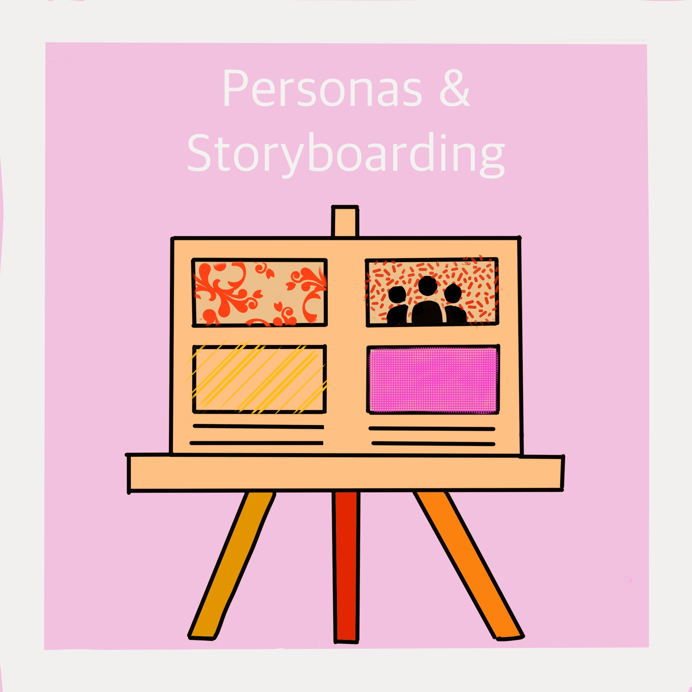

An investigative project highlighting user experience with the mailroom kiosk
CSCI 1300(UI/UX) at Brown explores user interaction of web design with the goal of creating learnable, memorable, and easily usable designs. In order to do this, designers often study everyday interfaces to identify strengths and weaknesses in common designs. With this intuition, practicing web designers can create more effective and usable designs through research, identifying a target audience(personas), and documenting user journey(storyboarding). The purpose of this project is for students to become familiar with common UI/UX practice as these steps are essential to building successful interfaces.
The project process began with selecting a public accessible interface, then preparing questions for user research, next creating a sketch of the interface, followed by observations, and concluding with the creation of two personas and a storyboard
Below I've summarized my five step project process. Click through the slides to learn more!
This project gave me a thorough introduction to the UI/UX process. I enjoyed conducting user research and applying learned UI/UX methods to an everyday interface. I was previously unaware of the thought and attention to detail involved in interface creation but am not appreciative of the interfaces I use naturally and effortlessly. Personas and Storyboarding gave me a new perspective on the use of everyday objects and I now feel comfortable approaching UI/UX web design assignemnts methodically.
Takeaways: